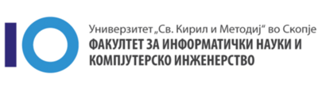

Основното училиште го завршив во ООУ „Кирил и Методиј“ во Свети Николе. Завршив како одличен ученик со просек
5.00. Поради интересот кон информатиката и технологијата, во 2017 година, средно училиште се запишав во СОУ „Коле Нехтенин“ во
Штип, на смерот електротехничар за компјутерска техника и автоматика. Таму изучувавме голем дел од материјалот
што сега го изучуваме на факултетот по предметите „Архитектура и организација на компјутери“, „Основи на веб дизајн“
, „Структурно програмирање“ и дел од другите предмети. Тоа ми даде добра основа за на факултет. Средното училиште
исто така го завршив со просек 5.00. Во 2021 година се запишав на Факултетот за Информатички Науки и Компјутерско Инженерство
при УКИМ во Скопје во смерот софтверско инженерство и информациски системи. Овде ме очекуваат многу нови работи и
знаења, како и напорна работа.
